Data
De a .
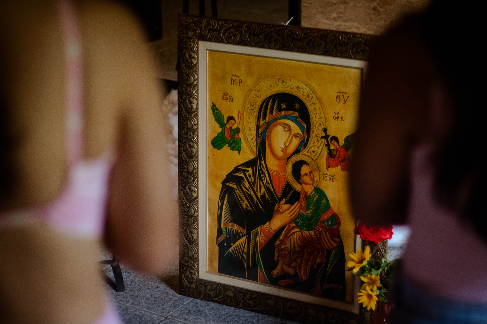
O tema e todas as informações da nova edição serão liberados automaticamente aqui no horário do lançamento.
“Seguro estou, se com a Mãe eu caminhar!”
07 A 10 JANEIRO
Quatro dias de oração, fraternidade, alegria e encontro verdadeiro com Deus.
De a .
Sítio Fidalgo, na serra de Alcântaras, Ceará.
As informações sobre saída e retorno serão divulgadas pela organização.
Momentos de oração, formação, louvor, partilha e convivência.
Uma edição inspirada na confiança de quem escolhe caminhar com Maria em direção a Jesus.
O Kero Deus 2027.1 convida cada jovem a reconhecer em Maria um exemplo de fé, disponibilidade e coragem. Com ela, queremos aprender a escutar a voz de Deus e responder com confiança ao chamado de Cristo.
Caminhar com a certeza de que Deus permanece presente mesmo quando não conseguimos enxergar todo o caminho.
Aprender com o sim de Maria e acolher sua presença materna em nossa caminhada de fé.
Permitir que Maria nos ajude a reconhecer, amar e seguir Jesus com fidelidade.
“Fazei tudo o que Ele vos disser.” João 2,5
Escolha uma das pessoas responsáveis abaixo para continuar sua inscrição pelo WhatsApp.
WhatsApp: (88) 99322-5541
Clique no botão para iniciar sua inscrição.
WhatsApp: (88) 99304-4644
Clique no botão para iniciar sua inscrição.
WhatsApp: (88) 99331-5474
Clique no botão para iniciar sua inscrição.
WhatsApp: (88) 92189-6501
Clique no botão para iniciar sua inscrição.
O Kero Deus reúne oração, alegria, amizades e encontros capazes de transformar o coração.
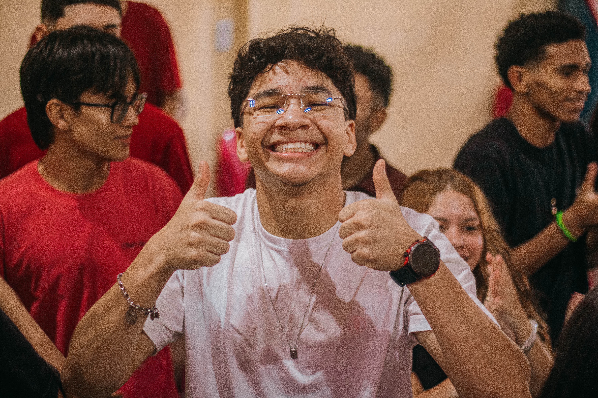
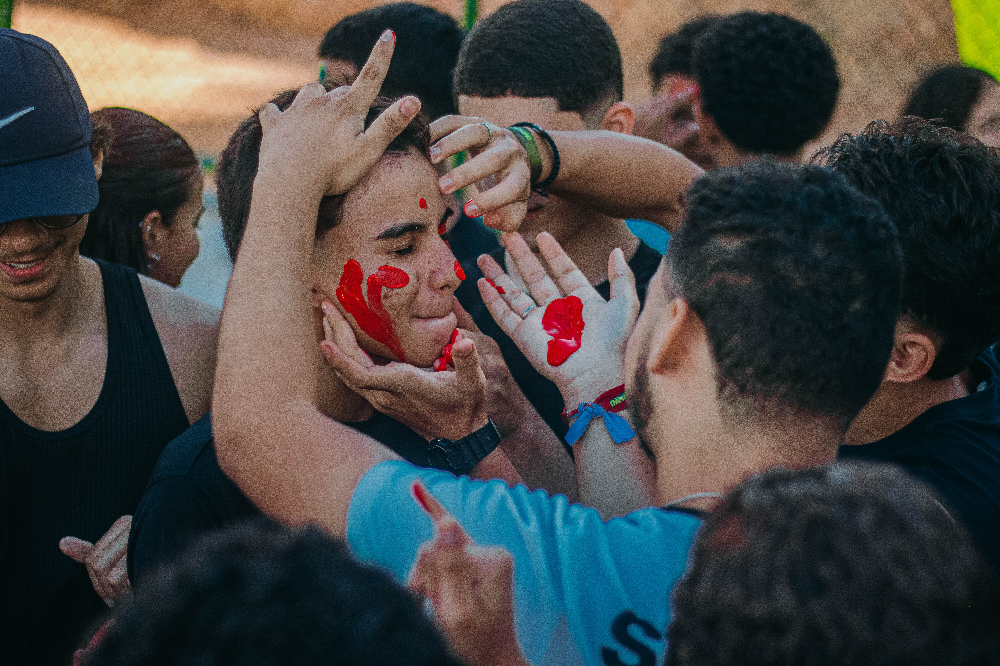
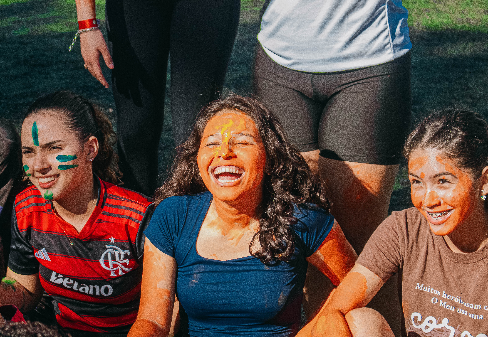
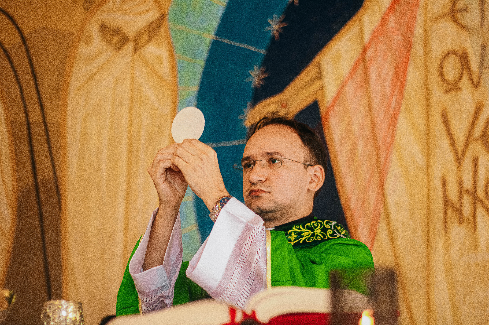
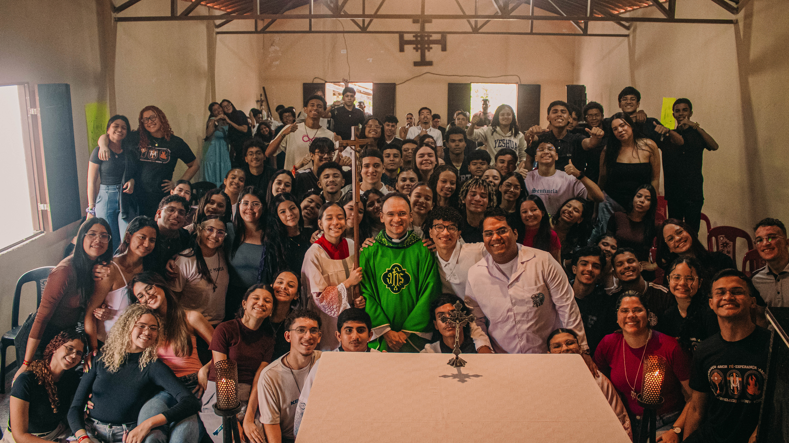
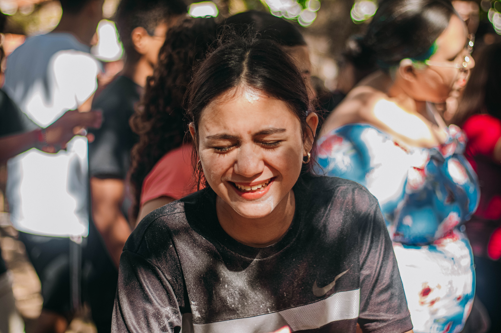
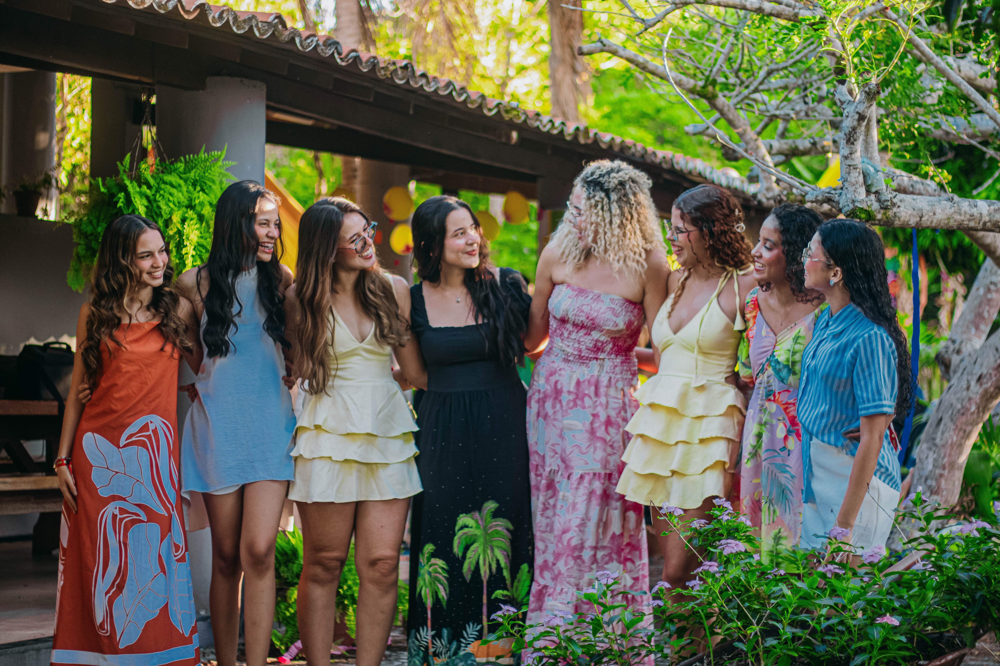
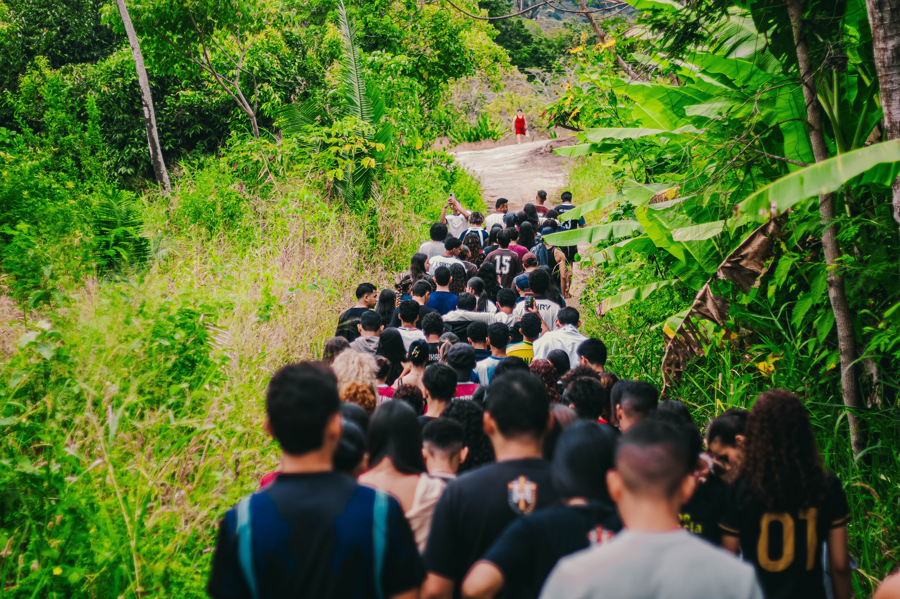
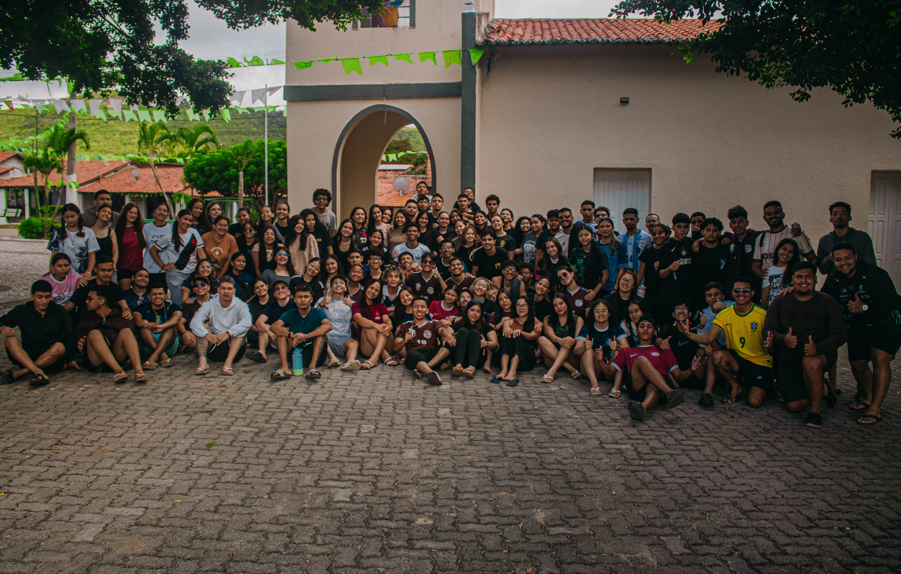
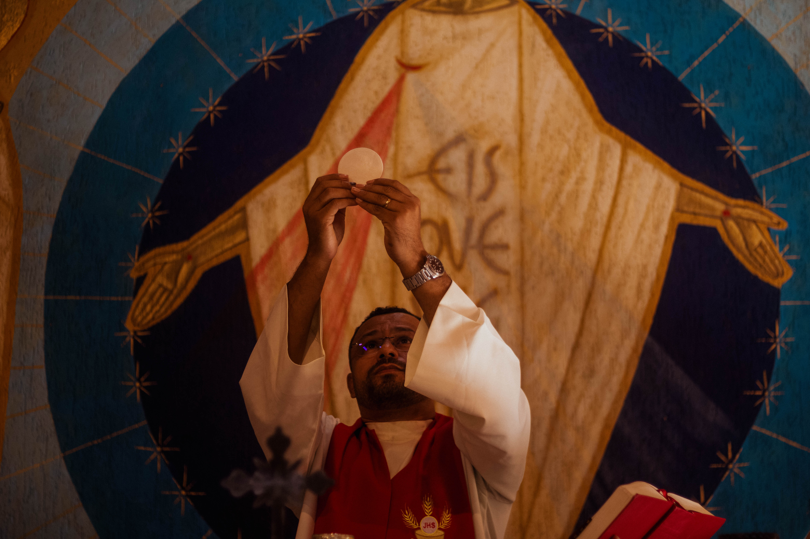
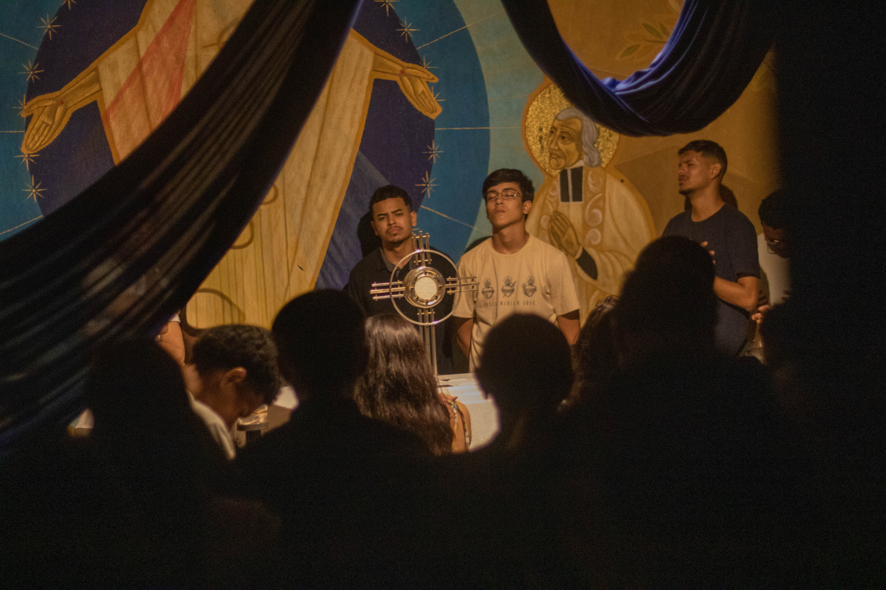
Prepare o coração com as músicas que fazem parte dessa experiência.
Vidas que foram transformadas pelo Kero Deus!

“O Kero Deus é uma experiência tão incrível que se torna única e especial em cada edição. É algo tão extraordinário que nem conseguimos imaginar sua dimensão...”
O Kero Deus é uma experiência tão incrível que se torna única e especial em cada edição. É algo tão extraordinário que, muitas vezes, nem conseguimos imaginar a dimensão do que é vivido ali. E o Kero Deus não é apenas um acampamento ou retiro… é como um recomeço, uma nova oportunidade de renovar a fé e escolher, todos os dias, querer mais de Deus.

“Costumo dizer que viver o Kero Deus é como experimentar um pedacinho do céu na Terra. São os melhores quatro dias, em que Jesus encontra acesso ao nosso coração...”
Costumo dizer que viver o Kero Deus é como experimentar um pedacinho do céu na Terra. São os melhores quatro dias, em que Jesus se utiliza de pequenas “desculpas” para ter um verdadeiro acesso ao seu coração. Viver o meu primeiro Kero Deus foi como ser curada de tudo aquilo que o mundo já havia causado em mim. Foi a resposta que eu precisava para me firmar na vida que, graças a Ele, tenho hoje: uma vida de intimidade e de verdadeiro encontro com o amor de Deus.
Esta será a minha quinta edição no acampamento, e como é bom ser uma jovem que busca incessantemente o amor de Cristo, porque, a cada edição, Ele me encontra de uma maneira diferente. “A melhor edição do Kero Deus sempre será a próxima.”

“No meio da correria eu ouvi um chamado, suave como a brisa, porém tão delicado. Era Deus me chamando pra perto outra vez, curando em silêncio...”
No meio da correria eu ouvi um chamado, suave como a brisa, porém tão delicado. Era Deus me chamando pra perto outra vez, curando em silêncio o que o mundo desfez.
Cheguei no Kero Deus com feridas no peito, sem saber qual caminho parecia direito. Trazia tanta dor guardada no coração e um vazio escondido na solidão.
Na Santa Missa, chorei diante do altar, não de tristeza, mas por me encontrar. Vi no Corpo de Cristo o amor verdadeiro, o abraço mais puro do Deus companheiro.
Na adoração, no silêncio e na paz, Deus foi curando tudo o que ficou para trás. E aquilo que tanto pesava em meu peito foi entregue nas mãos do Senhor perfeito.
O Kero Deus não foi só um acampamento, foi renovo de fé em meio ao sofrimento. Foi Cristo mudando meu jeito de viver, me mostrando que ainda vale a pena crer.
Voltei diferente daquele lugar, com mais esperança para recomeçar. Porque quem encontra Jesus de verdade leva no peito a paz da eternidade. Hoje sigo mais firme, segurando minha cruz, pois descobri que minha força vem de Jesus. ✨

“O Kero Deus nunca foi apenas um acampamento. Ele é uma das formas mais lindas que Deus encontrou para alcançar e salvar corações...”
O Kero Deus nunca foi apenas um acampamento. Na verdade, ele é uma das formas mais lindas que Deus encontrou para alcançar e salvar corações. Cada momento vivido ali é especial: a simplicidade nas pequenas coisas, a alegria compartilhada e a constância de um amor que permanece.
É impossível não perceber o quanto esse acampamento já transformou tantas histórias. O Kero Deus salvou minha vida, continua salvando, salva muitas outras vidas e ainda salvará tantas mais. Porque não se trata apenas de dias vividos em um acampamento, mas de experiências que marcam profundamente nossas vidas. É um lugar que nos faz sair da rotina e nos adaptar a viver algo novo, nos aproxima de momentos especiais com Deus e nos impulsiona a enxergar a vida de uma maneira diferente.
Existe algo único naquele lugar, algo que faz cada abraço, cada oração, cada conversa e cada sorriso terem um significado maior. E talvez seja exatamente isso que torna tudo tão especial: a presença de Deus sendo sentida na simplicidade, no amor e na alegria de cada pessoa que faz parte dessa caminhada. É IMPOSSÍVEL SAIR DESSA EXPERIÊNCIA INCRÍVEL QUE É O KERO DEUS SEM SER TRANSFORMADO. ✨

“Minha experiência com o Kero Deus é simplesmente inexplicável. O KD é renovação, confirmação e a oportunidade que Deus me dá para recomeçar...”
Minha experiência com o Kero Deus é simplesmente inexplicável. O KD é renovação, confirmação e a oportunidade que Deus me dá para recomeçar. Eu amo o Kero Deus porque foi lá que encontrei refúgio quando meu coração estava cansado. Foi onde Deus me acolheu em Seus braços quando pensei que não conseguiria continuar. O KD é meu porto seguro, onde minhas lágrimas se transformam em oração e onde meu coração encontra paz.
Há um sentimento inexplicável quando esses quatro dias chegam. É como se o céu beijasse a Terra e tudo dentro de mim voltasse a fazer sentido. Esses quatro dias mudaram minha vida para sempre e, principalmente, a forma como eu amo. O Kero Deus não é apenas um retiro, mas um verdadeiro encontro com o amor de Deus. 💙

“O Kero Deus é salvação, foi salvação e continua sendo vida! Uma pequena estrofe é pouco para descrever o Kero Deus...”
O Kero Deus é salvação, foi salvação e continua sendo vida! Uma pequena estrofe é pouco para descrever o Kero Deus. Foi o retiro que me salvou e me fez permanecer firme até hoje. Não sei expressar em palavras como o Kero Deus faz você se sentir mais próximo de Deus.
Quem tiver a oportunidade de viver essa experiência, DEVE viver. É algo único, transformador e inesquecível! CUIDAAAA NESSE KERO DEUSSS! 🔥✨

“Eu amo o Kero Deus porque foi n’Ele que encontrei meu verdadeiro lar. Quem carrega Cristo está destinado a viver o extraordinário. ✨”
Eu amo o Kero Deus porque foi n’Ele que encontrei meu verdadeiro lar. E quem carrega Cristo de verdade está destinado a viver o extraordinário. ✨

“Para mim, o Kero Deus significa salvação, alegria e um verdadeiro encontro com Deus. Não tenho palavras suficientes para descrever essa experiência...”
Para mim, o Kero Deus significa salvação, alegria e um verdadeiro encontro com Deus. Não tenho palavras suficientes para descrever o que é o Kero Deus, porque só quem vive sabe o quão extraordinário ele é. É uma das experiências mais únicas que existem: ter um encontro verdadeiro com Deus e sentir Seu amor de forma tão intensa.
Então, se você tiver a oportunidade de viver isso, viva! Porque é uma das melhores experiências que alguém pode ter na vida. Simbora nesse Kero Deus! ✨

“O Kero Deus, para mim, é muito mais do que um retiro. É como se fosse meu lar, o lugar onde meu coração finalmente encontra paz...”
O Kero Deus, para mim, é muito mais do que um retiro. É como se fosse meu lar, o lugar onde meu coração finalmente encontra paz. São quatro dias que passam rápido, mas deixam marcas eternas dentro de mim.
É impossível explicar completamente tudo o que sinto vivendo cada momento ali. O agir de Deus é tão forte e tão presente nas músicas, nas pregações, nas brincadeiras e até nos momentos mais simples de fraternidade.
O que torna o KD tão essencial para mim é que lá eu me reencontro. No silêncio e na partilha, Deus me lembra de quem eu realmente sou. Cada edição traz uma nova história, um toque diferente e uma experiência única, mas todas terminam com a mesma certeza reconfortante: a de que ali eu sempre estarei em casa. ✨
Prepare sua bagagem para viver os quatro dias com tranquilidade.
Para os momentos de oração, missa e adoração.
Roupas adequadas para as atividades durante o dia.
As noites na serra podem apresentar temperaturas menores.
Escova, pasta, sabonete, shampoo, toalha e desodorante.
Leve corretamente identificados os medicamentos de uso contínuo.
Para manter a hidratação durante toda a programação.
Confira as primeiras informações sobre o Kero Deus 2027.1.
Sítio Fidalgo, Alcântaras, Ceará.
Sítio Fidalgo, 12
Santo Antônio dos Fernandes
Alcântaras, CE — CEP 62120-000
De 7 a 10 de janeiro de 2027.